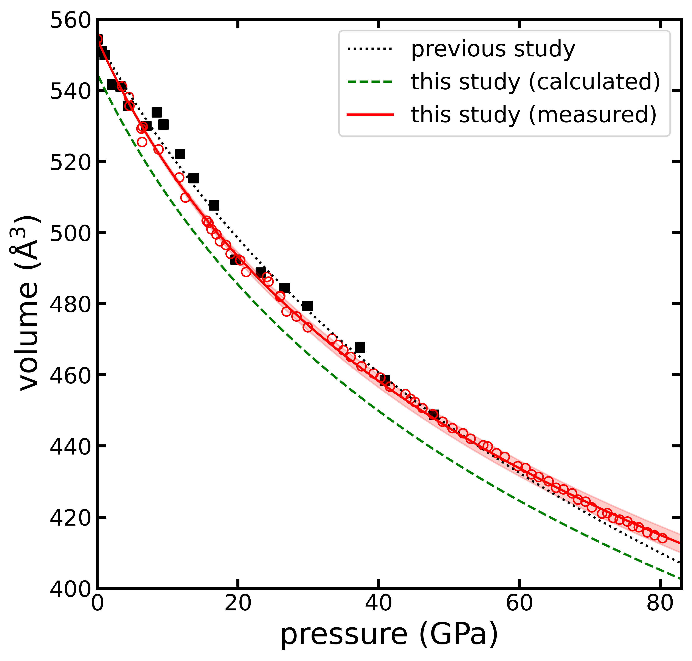
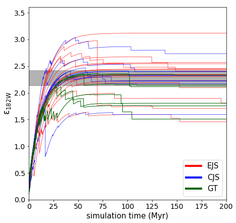
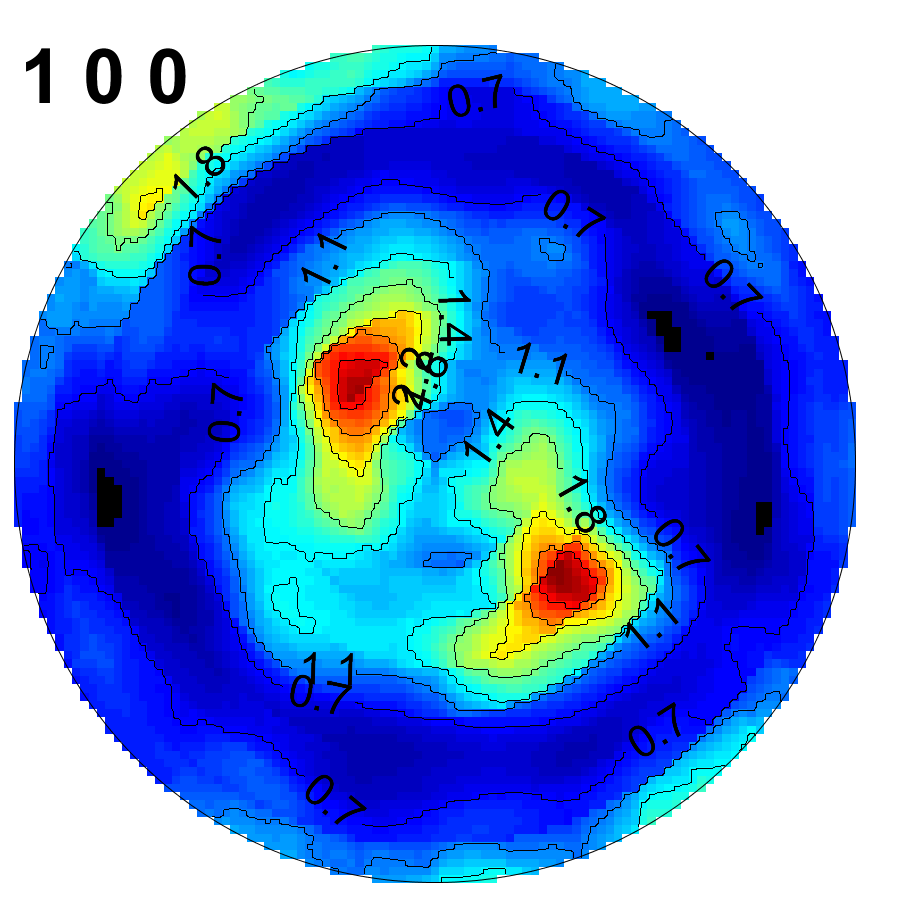
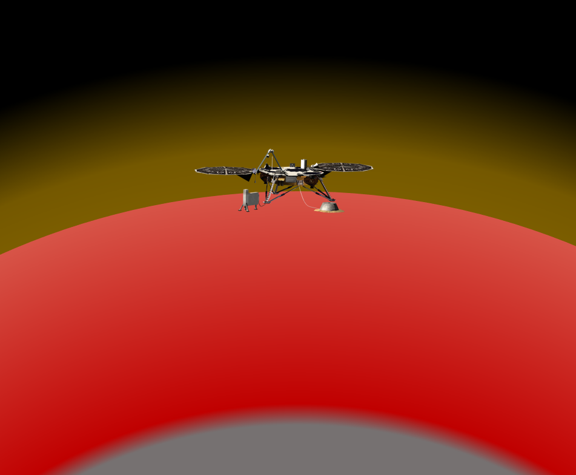

Email: mcbrennan at lanl.gov
Research
Equations of state for crystalline solids

The properties of any material depend on a number of physical conditions called "thermodynamic state variables", which include pressure, temperature, and volume. Predicting how a substance will behave requires an "equation of state" to describe the relationship between these variables.
The simplest equations of state, like Boyle's law, show that the volume of a gas decreases as its pressure increases. This relationship holds true for solid crystals as well, although their equations are more complicated.
Formulating an equation of state for a particular material generally requires measuring that material's volume at extreme pressures and temperatures. These formulations are important for our understanding of solid matter, as well as our ability to produce technologies that operate at extreme conditions.
Formation timescale of Mars

Mars is much smaller than Earth, and it lacks a magnetic field, a thick atmosphere, and liquid water. These differences are ultimately derived from the distinct formational histories of the two planets. Gravitational simulations can help us determine how Mars might have grown.
The isotope tungsten-182 traces the time of planetary core formation. Combining gravitational simulations with isotopic calculations reveals that there are many paths to forming a Mars-like planet. Mars could have either formed very early or continued to grow for tens of millions of years.
Texture of iron alloys at ultrahigh pressures

Earth's inner core is a moon-sized ball of solid metal. This metal is known to be an alloy of iron, nickel, and an as-yet-unidentified mixture of light elements (like oxygen and silicon). Seismic waves which pass through the inner core have revealed large-scale structures, probably arising from the deformation (or "texture") of the solid alloy.
By squeezing an alloy sample between two diamonds, a technique called diamond anvil cell compression, it is possible to replicate the pressures of the deep Earth. These samples can then be analyzed with X-ray diffraction to directly observe the alloy's texture. This research helps us understand the formation of the real inner core.
Martian core–mantle differentiation
 Mars, like all rocky planets, has an iron-rich metallic core. Compared to Earth's core, the Martian core is thought to be smaller (in terms of its portion of planetary mass) and may also be much richer in the light element sulfur.
Mars, like all rocky planets, has an iron-rich metallic core. Compared to Earth's core, the Martian core is thought to be smaller (in terms of its portion of planetary mass) and may also be much richer in the light element sulfur.
Differences between the cores of Earth and Mars must have developed during core-mantle differentiation, the process by which the metals of a terrestrial body separate from the rocks.
This differentiation event is fundamental to planetary evolution and is influenced by the conditions inside the infant planet. By simulating many possible versions of Martian core formation, we are able to investigate these otherwise inaccessible primordial conditions.
Geophysical properties of deep Mars

Although we'll never visit the deep Earth, the worldwide network of seismic detectors allows us to indirectly observe the mantle and core. Similar techniques were used on the Moon during the Apollo program, but no seismic instrument had ever been successfully deployed to another planet until NASA's InSight lander touched down in late 2018.
Locating and interpreting potential seismic events depends on models of Mars' structure, which in turn depend on poorly-known geophysical parameters. By constructing Martian structural models for a range of possible parameter values, we were able to evaluate how these will influence potential seismic observations, as well as add to the catalog of models available to the Marsquake Service.